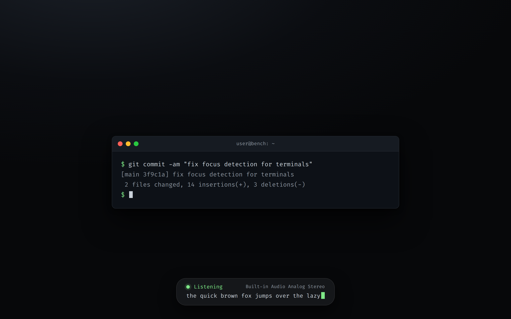
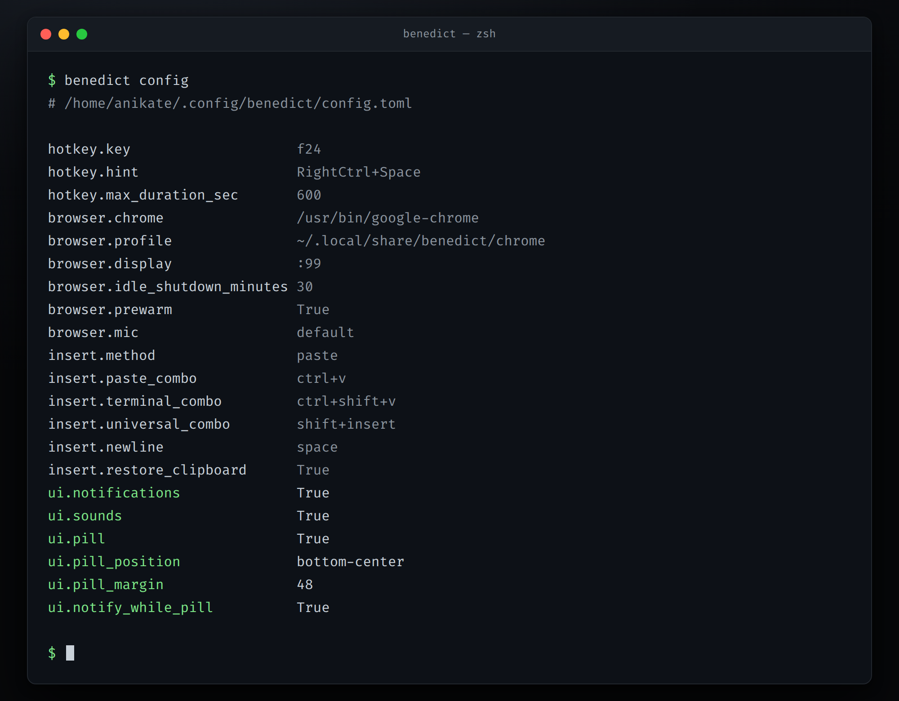
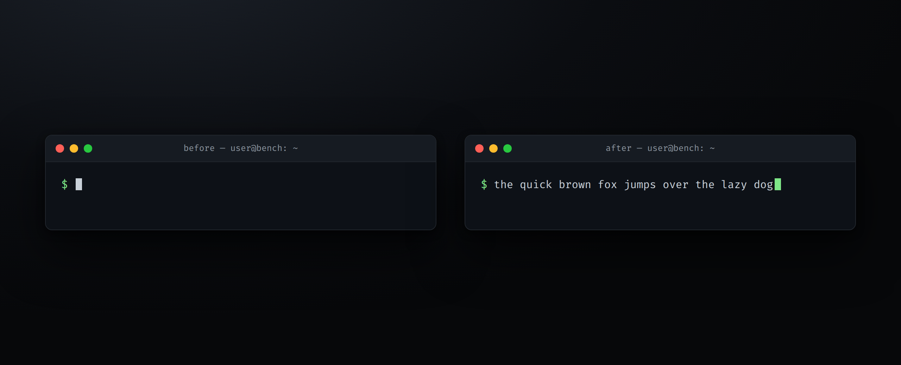
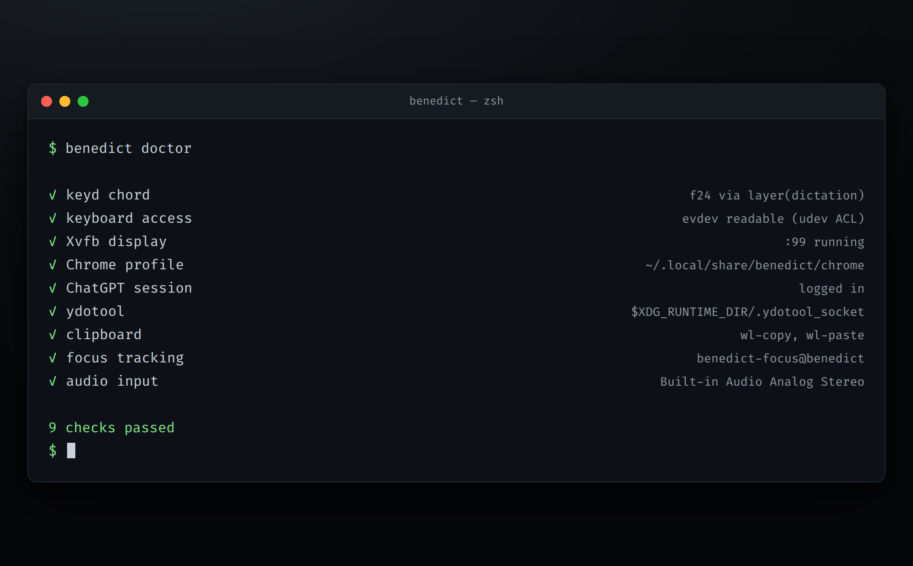

benedict
Talk instead of typing. Anywhere on Linux.
Hold a key, say what you mean, let go. The words appear at your cursor — your editor, your terminal, any text box. The transcription comes from ChatGPT's dictation, which is about as good as speech-to-text gets.
Why this exists
ChatGPT's dictation is genuinely excellent. It punctuates. It keeps the sentence together when you stumble. It handles the names and jargon you actually use. And if you already pay for ChatGPT, it costs nothing extra.
The problem was never the transcription. It was the ritual around it: open the browser, find the tab, click the microphone, speak, copy the text, switch back to what you were doing, paste. Seven steps between a thought and the page.
Benedict is those seven steps, reduced to one key.
What it feels like
-
Hold
RightCtrl+Space. A quiet notification slides in telling you the microphone is live and which one it is. - Speak. ChatGPT transcribes as you go. A small floating pill at the bottom of the screen shows the words forming in real time, so you can trust it heard you.
- Let go. The transcript is pasted wherever your cursor was waiting, and your previous clipboard is put back the way it was.
That is the whole interaction. There is no window to manage and no app to switch to — Benedict keeps a hidden browser signed in on your behalf so the tab is always warm.
press → speak → release → pasted
How it works, roughly
A single Chrome instance runs out of sight, dedicated to dictation and signed into your account. When you hold the key, Benedict asks ChatGPT to start listening. When you release, it reads the finished transcript and types it into the window you were already using — picking the right paste shortcut for terminals and editors on its own.
Nothing you dictate is ever sent as a chat message, and the composer is cleared after every use. Audio only ever goes where ChatGPT's dictation needs it; your transcripts stay on your machine.
In action
A few glimpses of the loop while it runs. These are faithful mockups of the on-screen output, not stock illustrations.


benedict config shows the
effective values.


benedict doctor checks every moving part, so when
something breaks you find out in one command.
Getting started
You need Ubuntu on GNOME Wayland with PipeWire, Google Chrome, and a ChatGPT account. Then three commands:
git clone https://github.com/Anikate-De/benedict ~/dev/benedict
cd ~/dev/benedict
sudo ./scripts/setup.sh
Sign in once — importing the session from the browser you already use is the quickest path — then start the service:
benedict login --import systemctl --user enable --now ydotoold benedict
Run benedict doctor if anything feels off, and
benedict --help to see the rest. Want to preview the
status pill without dictating? benedict pill plays a
short demo. The
README
has the full configuration reference, uninstall steps, and a
troubleshooting section.
Roadmap
v0.2 — the pill grows up: live state, the active
microphone, the transcript streaming in with a blinking caret,
configurable position and screen margin, notifications that mirror
it, a checklist in benedict doctor, and new
[ui] settings with benedict config.
v0.1 — the first release: hold-to-talk, hidden ChatGPT, focus-aware paste, clipboard restore, and transcript history.
Still thinking about the roadmap. As and when I use it, more features will come.